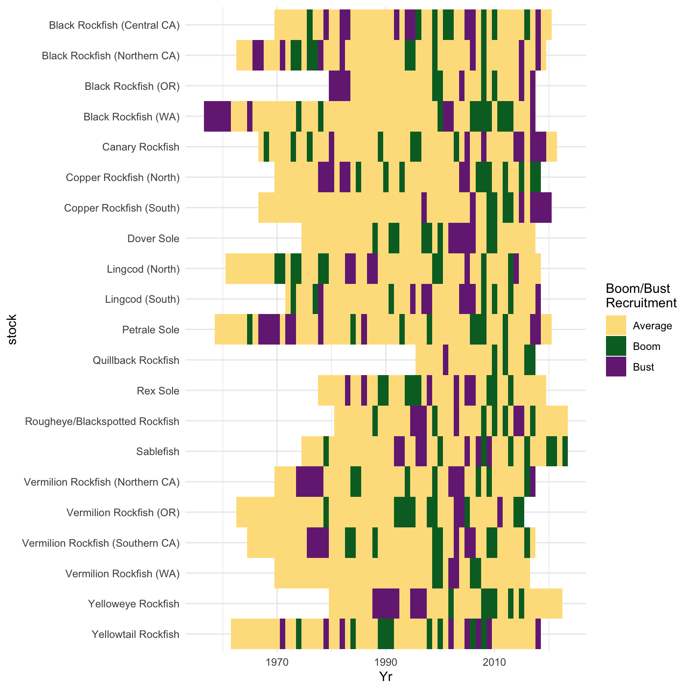
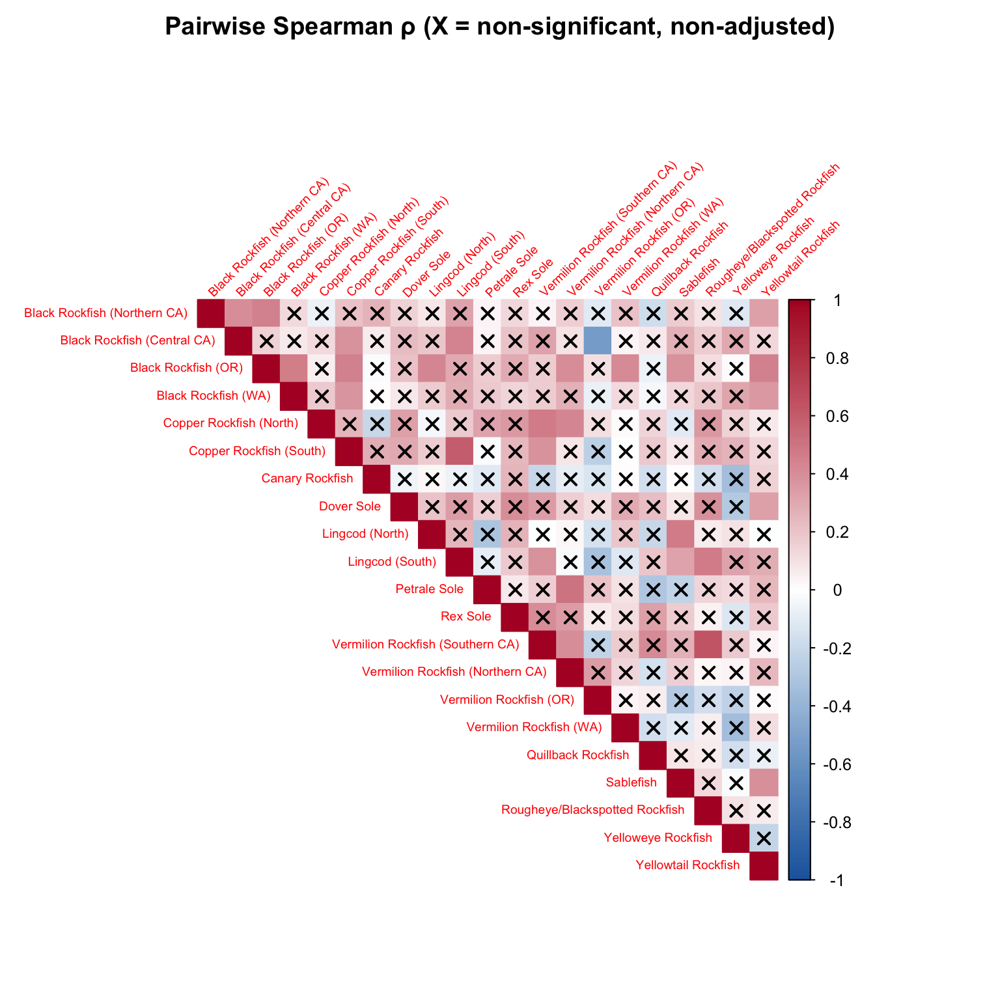
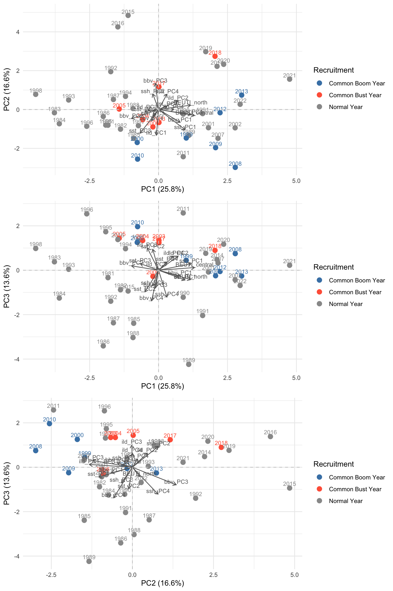

First, the time series of recruitment for all stocks is shown, using the boom/bust/average classification, to quickly visualize synchrony.
Next, I evaluated synchrony between each pair of stocks using Spearman rank correlation. Significance for these pairwise correlations is evaluated using a t-test, where the sample size used in the calculation is the effective sample size based on the degree of autocorrelation in each time series. An adjusted p-value using the Benjamini-Hochberg False Discovery Rate correction is also presented, given that we are testing 190 different pairwise correlations across our 20 stocks.
Finally, common boom/bust years are identified and visualized on the same PCA of the 14 predictor time series.


| sp1 | sp2 | rho | n_eff | p_raw | p_adj |
|---|---|---|---|---|---|
| Black Rockfish (Central CA) | Copper Rockfish (South) | 0.3841629 | 35 | 0.0227017 | 0.2166983 |
| Black Rockfish (Central CA) | Lingcod (South) | 0.4409112 | 37 | 0.0063063 | 0.1407027 |
| Black Rockfish (Central CA) | Vermilion Rockfish (OR) | -0.5394388 | 31 | 0.0017382 | 0.0912541 |
| Black Rockfish (Northern CA) | Black Rockfish (Central CA) | 0.4042737 | 41 | 0.0087538 | 0.1414081 |
| Black Rockfish (Northern CA) | Black Rockfish (OR) | 0.4596783 | 37 | 0.0042061 | 0.1261831 |
| Black Rockfish (Northern CA) | Yellowtail Rockfish | 0.3336295 | 52 | 0.0156468 | 0.1853346 |
| Black Rockfish (OR) | Black Rockfish (WA) | 0.4697450 | 36 | 0.0038455 | 0.1261831 |
| Black Rockfish (OR) | Copper Rockfish (South) | 0.4533319 | 36 | 0.0054919 | 0.1407027 |
| Black Rockfish (OR) | Lingcod (North) | 0.4380129 | 37 | 0.0067001 | 0.1407027 |
| Black Rockfish (OR) | Sablefish | 0.3874603 | 37 | 0.0178207 | 0.1969658 |
| Black Rockfish (OR) | Vermilion Rockfish (Northern CA) | 0.4019039 | 36 | 0.0151088 | 0.1853346 |
| Black Rockfish (OR) | Vermilion Rockfish (WA) | 0.4110953 | 32 | 0.0194189 | 0.2038990 |
| Black Rockfish (OR) | Yellowtail Rockfish | 0.4539884 | 38 | 0.0041969 | 0.1261831 |
| Black Rockfish (WA) | Copper Rockfish (South) | 0.3744796 | 38 | 0.0205401 | 0.2054012 |
| Black Rockfish (WA) | Yellowtail Rockfish | 0.3670540 | 52 | 0.0074361 | 0.1414081 |
| Copper Rockfish (North) | Vermilion Rockfish (Northern CA) | 0.4349761 | 24 | 0.0336493 | 0.2853421 |
| Copper Rockfish (North) | Vermilion Rockfish (Southern CA) | 0.4770951 | 25 | 0.0158858 | 0.1853346 |
| Copper Rockfish (South) | Lingcod (South) | 0.5932007 | 31 | 0.0004363 | 0.0464735 |
| Copper Rockfish (South) | Vermilion Rockfish (Southern CA) | 0.3844344 | 27 | 0.0477157 | 0.3465464 |
| Dover Sole | Yellowtail Rockfish | 0.3307158 | 45 | 0.0264914 | 0.2418784 |
| Lingcod (North) | Sablefish | 0.4735729 | 43 | 0.0013386 | 0.0912541 |
| Lingcod (South) | Rougheye/Blackspotted Rockfish | 0.4725900 | 26 | 0.0147698 | 0.1853346 |
| Lingcod (South) | Sablefish | 0.3279774 | 42 | 0.0339693 | 0.2853421 |
| Lingcod (South) | Vermilion Rockfish (Southern CA) | 0.3878508 | 29 | 0.0376231 | 0.3038792 |
| Petrale Sole | Vermilion Rockfish (Northern CA) | 0.5019540 | 23 | 0.0146645 | 0.1853346 |
| Sablefish | Yellowtail Rockfish | 0.3906977 | 44 | 0.0087385 | 0.1414081 |
| Vermilion Rockfish (Southern CA) | Rougheye/Blackspotted Rockfish | 0.6389284 | 26 | 0.0004426 | 0.0464735 |
| Vermilion Rockfish (Southern CA) | Vermilion Rockfish (Northern CA) | 0.4070777 | 24 | 0.0483516 | 0.3465464 |
| Year | Average | Boom | Bust |
|---|---|---|---|
| 1999 | 12 | 9 | 0 |
| 2000 | 13 | 8 | 0 |
| 2008 | 8 | 12 | 1 |
| 2009 | 11 | 8 | 2 |
| 2010 | 11 | 10 | 0 |
| 2012 | 15 | 6 | 0 |
| 2013 | 14 | 7 | 0 |
| Year | Average | Boom | Bust |
|---|---|---|---|
| 1978 | 9 | 2 | 6 |
| 2003 | 13 | 1 | 7 |
| 2004 | 15 | 0 | 6 |
| 2005 | 10 | 1 | 10 |
| 2006 | 10 | 4 | 7 |
| 2017 | 10 | 3 | 6 |
| 2018 | 5 | 1 | 7 |
